Conference Talk
A verification-first approach to physics-grounded AI for CFD-based medical-device design optimization
Amir Sajjadi
The Engineering Question
This does not claim to solve the general Navier–Stokes existence-and-smoothness problem. Navier–Stokes remains the physics foundation — A Gaussian Process estimates four scalar CFD responses within declared design bounds. Physical validation remains pending.
Navier-Stokes AI — Approach & Methodology
Pure AI surrogate
Predicts selected metrics from numerical examples. It cannot guarantee field conservation for a new geometry.
Full CFD
Solves flow fields under stated assumptions. New geometries require a new mesh and numerical solve.
The answer:
Train on CFD cases that pass numerical gates. Return selected designs to CFD for an independent check.
Navier-Stokes AI — Approach & Methodology
1 · Geometry + BCs
Catheter/vessel geometry, flow rate, fluid properties
2 · Navier–Stokes / CFD
Axisymmetric incompressible solver
3 · Verification & QA gate
Analytical, mass, residual, mesh checks
4 · Selected CFD dataset
Only gate-passing cases proceed
5 · AI surrogate
Four scalar outputs + GP uncertainty
6 · Design-space search
Thousands of candidates, surrogate-scored
7 · Best candidates
Pressure drop + device WSS objectives
8 · CFD confirmation
Independent production-mesh CFD
CFD supplies numerical training labels. Surrogate screening uses no new CFD solves; total time savings remain unmeasured.
Distinguish analytical, reduced-order, numerical CFD, and AI results — never blur the four
Verify the numerical solver before it ever generates AI training data
Report what the final-model split tests; reserve a prospective set before active learning next time
Report measured prediction error and solver times; benchmark end-to-end cost before claiming savings
Never present synthetic or example values as measured results
Confirm selected designs with independent production-mesh CFD; test shear on a fine mesh next
Passing numerical gates supports this model and mesh; physical or clinical validation remains open.
Milestone 1 · complete
Concentric-annulus flow around a straight catheter — the one case with a known closed-form solution, used as ground truth before any CFD result is trusted.
Reference operating point
| Reynolds number | ≈ 107.1 |
| Analytical pressure drop | 736.92 Pa |
| Analytical max. velocity | 0.2666 m/s |
| Catheter wall shear | 4.29 Pa |
| Vessel wall shear | 3.38 Pa |
Grid convergence (numerical vs. exact)
| Grid points | ΔP error | Velocity L2 error |
|---|---|---|
| 21 | 0.259% | 0.248% |
| 41 | 0.065% | 0.062% |
| 81 | 0.016% | 0.016% |
| 161 | 0.004% | 0.004% |
Error decreases monotonically with mesh refinement — a convergence study, not a single lucky run
NS-0001 · Straight annulus
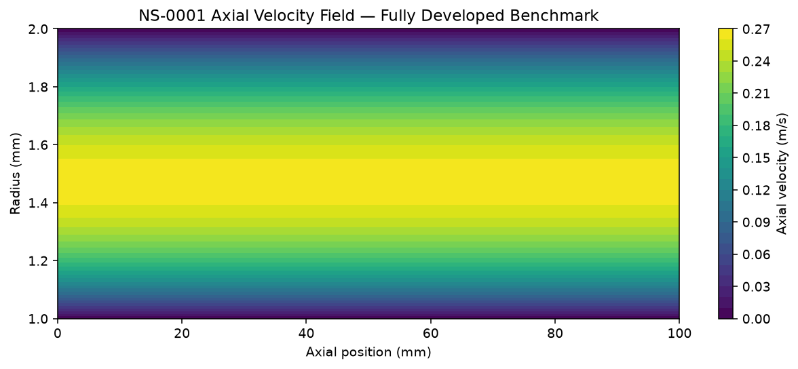
Axial velocity field
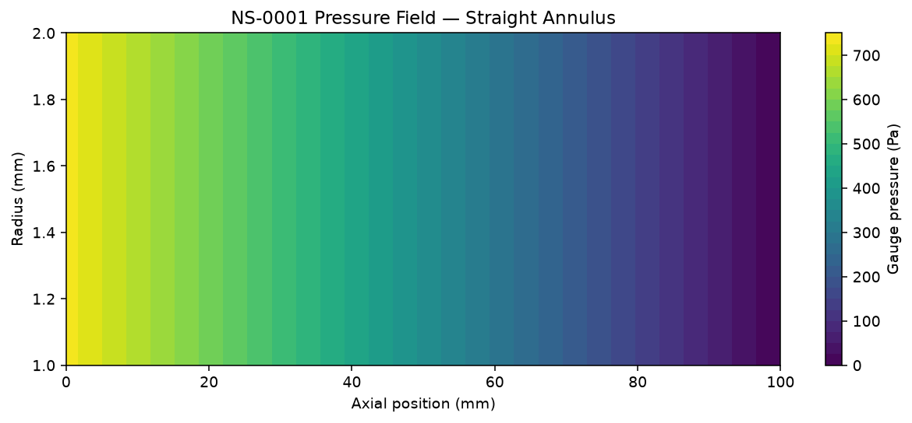
Pressure field
Straight-annulus benchmark; the enlarged-body NS-0003 device solve follows.
Why we trust it
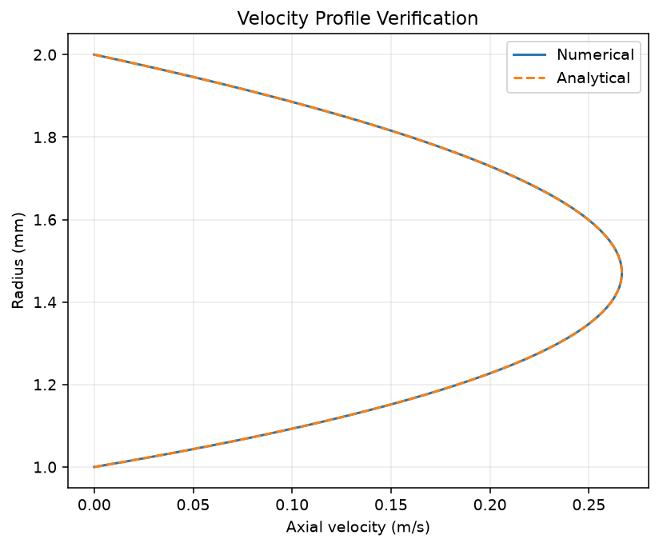
Numerical vs. analytical velocity profile
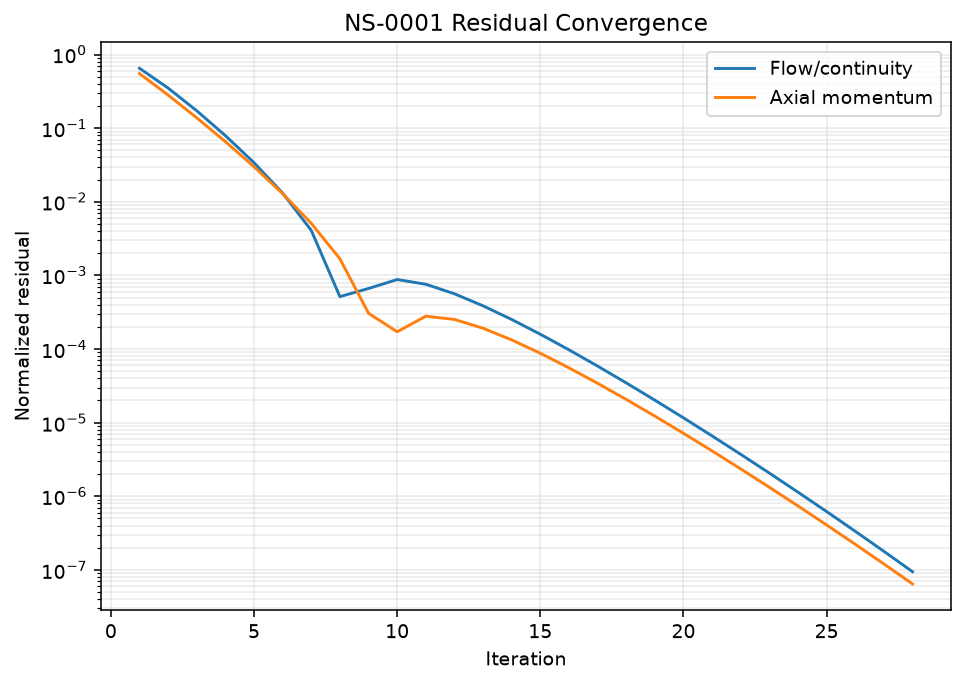
Residual convergence history
28 iterations to convergence · continuity residual 9.5e-08 · no-slip and mass conservation both pass
Technical detail · the NS-0003 device solver
Governing equations — steady, incompressible, no swirl
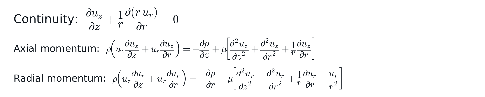
Discretization
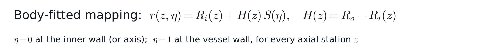
Finite-volume, cell-centered, collocated. Every face area / cell volume is the exact solid of revolution (2πr weighting). Convection: first-order upwind on conservative shared face mass fluxes.
Pressure-velocity coupling: SIMPLE
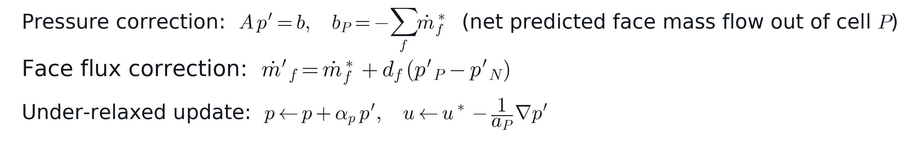
Loop: momentum predictor (implicit, under-relaxed) → predicted face fluxes + BCs → solve for p' → correct p, u, fluxes → repeat until continuity + flux-change both fall under tolerance.
Boundary conditions
Walls: no-slip, from actual cell-to-face geometry | Inlet/outlet: specified mass flow rate | Scope: axisymmetric device study; separate free-tip work appears in the research appendix
ρ = 1060 kg/m³, μ = 0.0035 Pa·s (blood-like)
Typical case: 100 mL/min
NS-0003 · Physics Engine v1
Verified 2D solve · merged to main
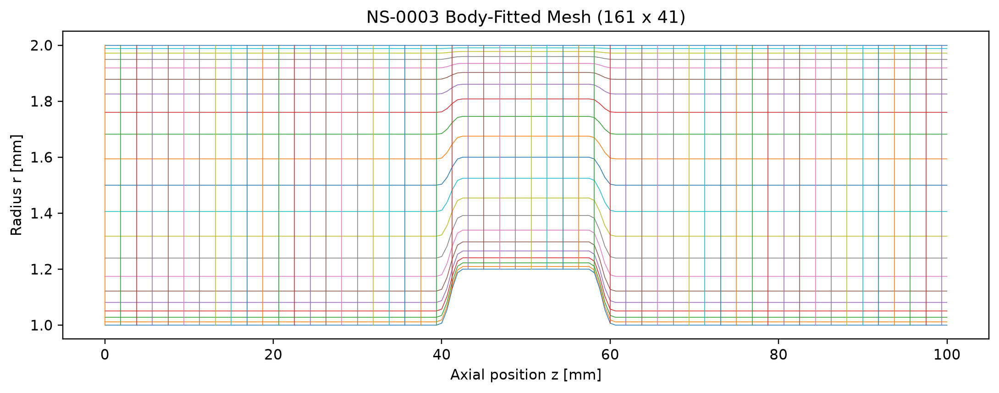
Actual solver output: 161×41 body-fitted production mesh
Frozen baseline parameters
| Vessel ID | 4.0 mm |
| Shaft OD | 2.0 mm |
| Device body OD | 2.4 mm |
| Body length | 15 mm |
| Transition length | 3 mm |
| Flow rate | 100 mL/min |
| Production mesh | 161 × 41 |
Shaft continues on both sides of the bulge — a different geometry from the free-ended circular-tip candidate shown later in this deck
NS-0003 · CFD solution
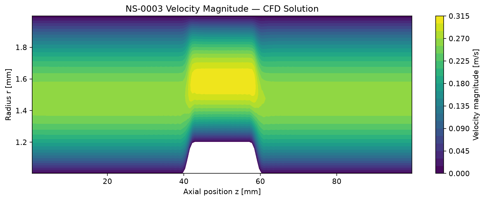
Velocity accelerates through the constriction, exactly as continuity predicts
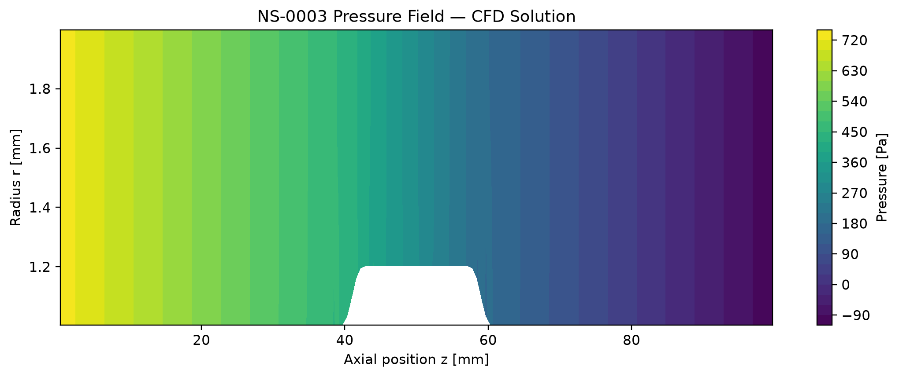
Pressure drops smoothly and monotonically along the vessel
Pressure drop
846 Pa
Peak velocity
0.314 m/s
Max device WSS
6.53 Pa
Converged in
57 iters
Negligible mass imbalance at convergence — independently re-executed and reproduced to 11 significant figures
NS-0003 · Mesh sensitivity
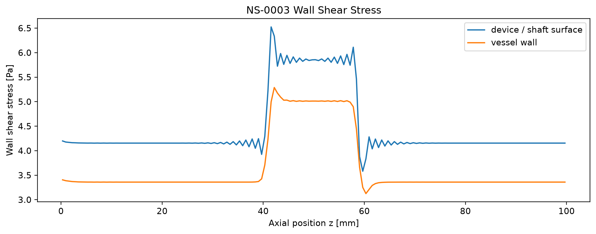
Wall shear stress: the sawtooth noise near the transitions is real and undisguised
Medium → fine mesh change (121×31 → 161×41 → 201×51)
| Pressure drop | 0.60% |
| Peak velocity | 0.07% |
| Device max WSS | 0.93% |
| Device P95 WSS | 3.37% |
| Vessel max WSS | 1.63% |
Documented, not hidden
WSS mesh sensitivity is explicitly carried as a qualified, open numerical-quality flag in the project's own decision log — pressure and velocity are not.
161×41 frozen as the production mesh for dataset generation; 201×51 reserved for selective fine-mesh verification
NS0003-DATASET-v1 · After active-learning round 1
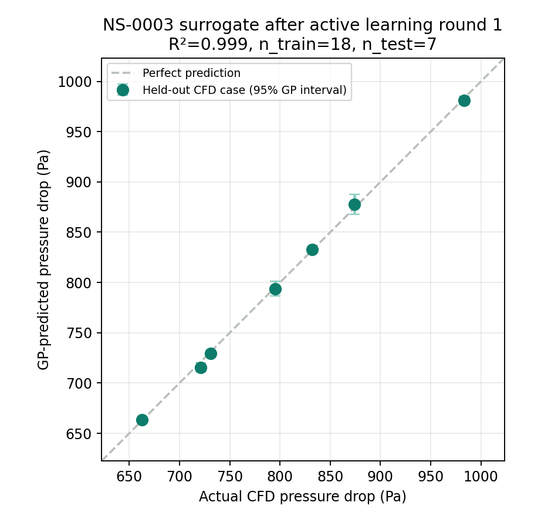
Evaluation GP: 18 train / 7 test
| Pressure drop | 0.999 |
| Peak velocity | 0.9997 |
| Vessel max WSS | 0.994 |
| Device max WSS | 0.953 |
Pressure RMSE 2.80 Pa on this single split.
How the five additions were chosen
A pressure-drop GP ranked 4,000 candidates by predictive uncertainty. Five separated inputs were solved with CFD. Device WSS R² is 0.953 on the later split; the earlier 0.890 used different test cases.
25 cases (20 initial + 5 additions). Five of seven test cases informed the earlier acquisition GP. A prospective test is next.
AI proposes, CFD confirms · mid-shaft device geometry
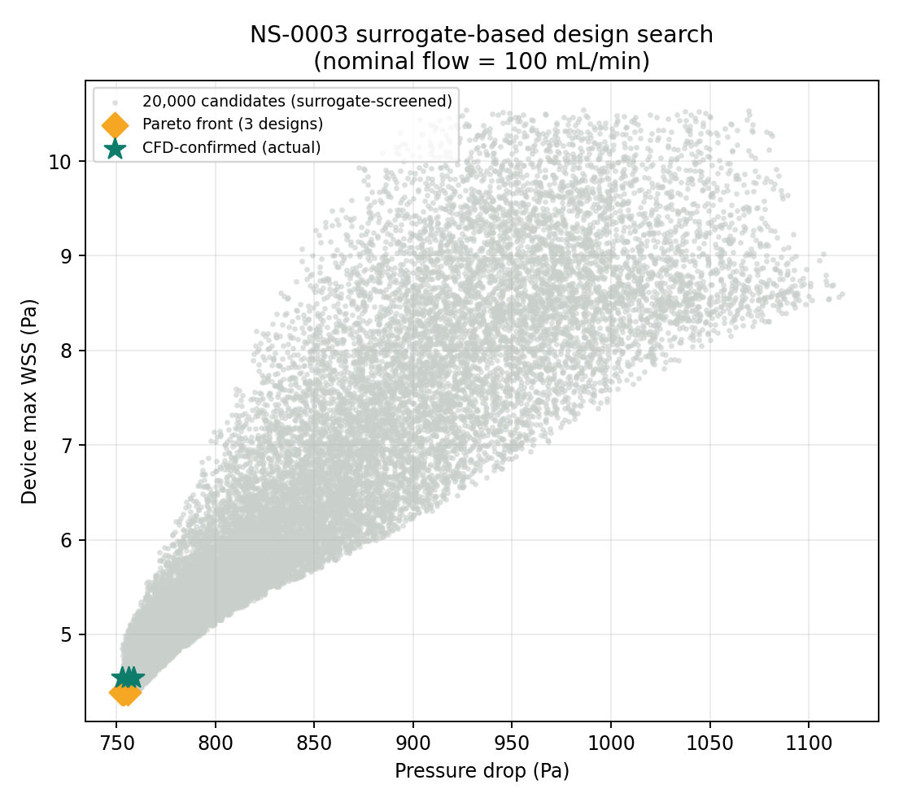
The honest finding
Both modeled objectives improve near the 2.10 mm lower body-OD bound. The saved screen has 3 nondominated designs. Device function constraints and clinical outcomes were outside this search.
CFD confirmation, 3/3 candidates
| Design | ΔP error | WSS error |
|---|---|---|
| OPT1-001 | 0.05% | 3.43% |
| OPT1-002 | 0.31% | 3.38% |
| OPT1-003 | 0.39% | 3.39% |
At fixed 100 mL/min, 20,000 geometries were scored without additional CFD solves. Twenty-five dataset solves and three confirmations are counted separately.
Real CFD, both designs, same solver · mid-shaft device geometry
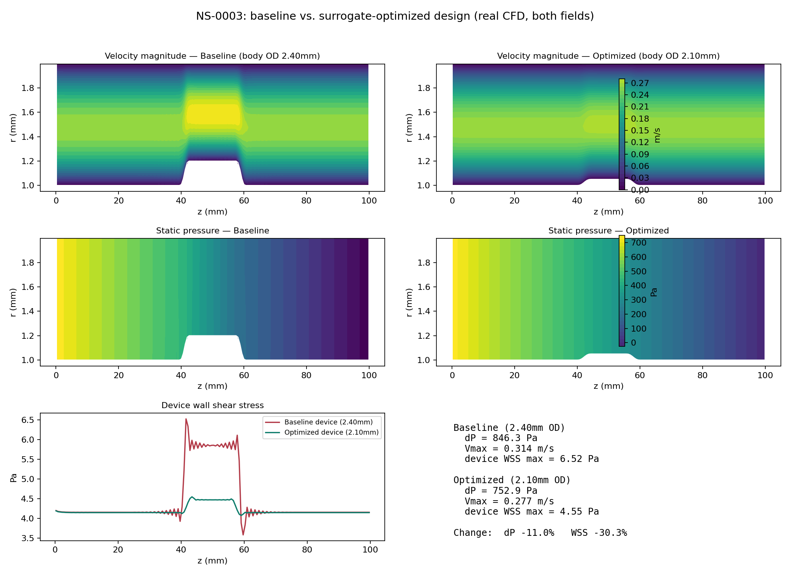
Pressure drop
846 → 753 Pa (−11.0%)
Device max WSS
6.52 → 4.55 Pa (−30.3%)
Peak velocity
0.314 → 0.277 m/s
Both fields come from independent CFD at 161×41. The selected design still needs fine-mesh shear verification.
1 · Verified physics baseline
2 · Surrogate architecture prototype
3 · Real 2D coupled solve: NS-0002 + NS-0003 (merged to main)
4 · Production CFD dataset, mid-shaft device: 25/25 cases accepted (20 DOE + 5 active-learning)
5 · AI surrogate + active learning round 1, mid-shaft device (GP, held-out R² 0.95-0.9997)
6 · Surrogate optimization, mid-shaft device (20k screened) + CFD confirmation (3/3 matched)
7 · Public case study live; validation next
Core principle
The 25-case model screened 20,000 geometries and three choices received independent CFD solutions. Next: prospective testing, selected-design fine-mesh shear checks, physical validation, and a fair timed cost comparison.
Amir Sajjadi
Public case study: github.com/asajjadi/navier-stokes-ai-case-study
Not connected to the NS-0003 dataset, surrogate, or optimization results shown earlier — a distinct geometry module, on its own solver
Research appendix · separate free-tip geometry
Boundary condition verified against exact solution
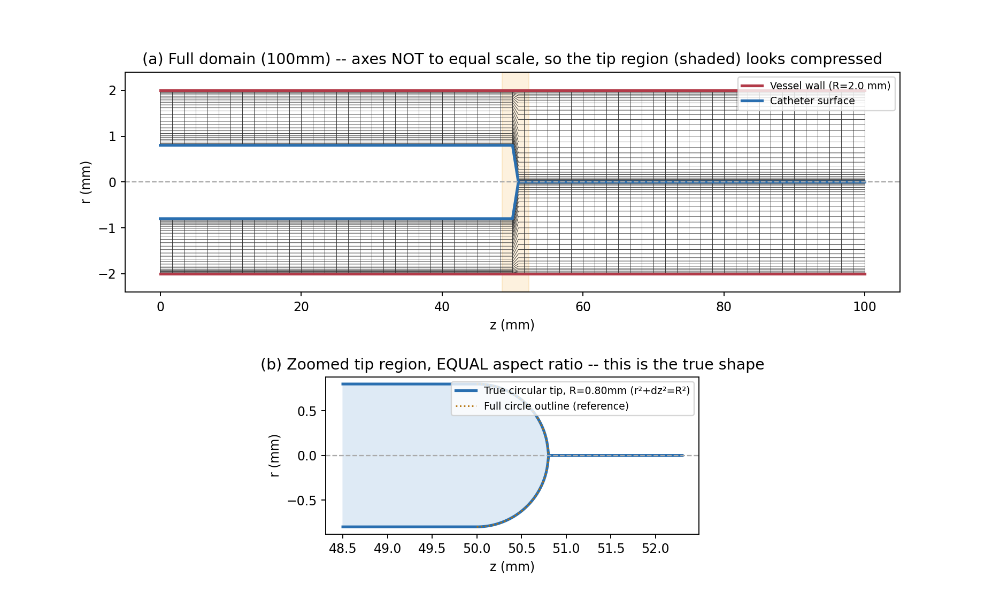
Top: full-domain mesh (axes not equal scale). Bottom: zoomed, true-to-scale view — the tip is an exact semicircle, verified against a reference circle outline
Verified: axis boundary condition, mesh convergence
Tested against exact Hagen-Poiseuille pipe flow (translation-invariant, no entrance-length ambiguity). L2 profile error decreases monotonically with refinement: 0.87% → 0.26% → 0.17% across 3 grid levels — a real release-gate test now, not a one-off run.
Open finding: the rounded tip diverges; a cone does not
The rounded tip diverges under every mesh fix tried (Entries 021–030). Root cause: badly skewed cells where the nose closes on the axis. A conical tip stays stable in two solves but has not yet converged (031–034).
Research appendix · conical tip, recorded status
Change per iteration, log scale, nz=241. Target 1e-7 is off the bottom.
| Relaxation (u / p) | 0.3 / 0.15 | 0.7 / 0.3 |
|---|---|---|
| Iterations | 4,000 | 3,000 |
| Wall time | ~3.6 h | ~1 h |
| Final change / it | 2.2e-5 | 4.1e-5 |
| Pressure drop | 295 Pa | 293 Pa |
| Peak velocity | 2.43 m/s | 1.87 m/s |
| Mid-domain flow | 13% low | 13% low |
Peak velocity differs ~30% between runs and flow is not yet conserved. Not reportable until converged.
Next: resume from the 0.3 / 0.15 settings with checkpointing (save every 200 iterations, built and tested in Entry 034). The prior runs did not meet the 1e-7 target or conserve mid-domain flow. Recheck the current run log before presenting a status update.
Source: dev log Entries 032–034 · not connected to the NS-0003 dataset or surrogate